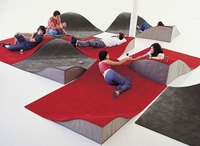
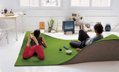
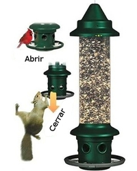
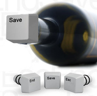

Thu, 01 Mar 2012 07:30:12 +0000
Cuadricópteros interpretan el tema central de James Bond
Cuadricópteros interpretan el tema central de James Bond
Lo mejor de James Bond es Austin Powers. Ya está, lo he dicho. Era algo que tenía dentro y no me dejaba respirar. Y ahora al tema: en la universidad de Pensilvania hay unos laboratorios llamados GRASP. Como en todo Continue reading.
Lo mejor de James Bond es Austin Powers.
Ya está, lo he dicho. Era algo que tenía dentro y no me dejaba respirar.
Y ahora al tema: en la universidad de Pensilvania hay unos laboratorios llamados GRASP. Como en todo laboratorio común y corriente, hacen experimentos bajo tormentas eléctricas con el objetivo de insuflar vida a cadáveres del cementerio más cercano. Cuando no lo consiguen, sacan a los cuadricópteros y los programan para tocar un tema. Y, la verdad, a juzgar por el video de Kurtis Sensenig, no lo hacen nada mal.
Visto en Laughing Squid
¿Algo que comentar? [1] Tags: canción, James Bond, robots, voladores
Wed, 29 Feb 2012 11:50:13 +0000
Carga tu iPhone con la respiración
Carga tu iPhone con la respiración
Dada la autonomía de la batería del iPhone, tenerlo siempre cargado se hace tan importante como respirar. Joao Paulo Lammoglia ha reflexionado mucho sobre la frase anterior y ha terminado diseñando un cargador de iPhone que funciona mediante la respiración. Continue reading.

Dada la autonomía de la batería del iPhone, tenerlo siempre cargado se hace tan importante como respirar. Joao Paulo Lammoglia ha reflexionado mucho sobre la frase anterior y ha terminado diseñando un cargador de iPhone que funciona mediante la respiración. Con un par de turbinas y el poder de unos cuantos resoplidos, uno se puede olvidar de llevar el cargador encima y sustituirlo por ese respirador tan cool.
Pero seamos prácticos. Las turbinas girarán a una velocidad superior si estamos haciendo ejercicio o hiperventilando, así que si no quieres gastar luz y contribuir a que el mundo sea un lugar mejor, encasquétale el cargador a tu novia mientras estéis en plena apoteosis sexual. Ella lo entenderá. Además, el cargador puede ser un delator genial: si el móvil no se ha cargado cuando hayáis acabado es que tu chica está fingiendo. O está muerta. O es una muñeca hinchable, una barra de pan o un Yorkshire. Tú sabrás con quién te acuestas, que no lo va a hacer todo el iPhone.
Visto en Psfk
¿Algo que comentar? [8] Tags: cargadores, diseño, iphone, respiración
QueLoVendan La tienda de regalos y gadgets divertidos - Cupón dto. 5% ->
SOY_FAN_DE_NPC
Tue, 28 Feb 2012 17:30:07 +0000
Alfombra ondulada
Alfombra ondulada
Hacer vida en el suelo o, lo que es lo mismo, culebrear la existencia, es un objetivo al que muchos aspiramos. Tristemente, lo máximo a lo que se llega es a hacer vida sentado frente al ordenador, que está bien Continue reading.

Hacer vida en el suelo o, lo que es lo mismo, culebrear la existencia, es un objetivo al que muchos aspiramos. Tristemente, lo máximo a lo que se llega es a hacer vida sentado frente al ordenador, que está bien pero exige flexionar las rodillas, un esfuerzo desagradable donde los haya. En algunos tugurios se rumorea que si uno flexiona repetidamente las rodillas se materializa un diablo llamado Ejercicio y nos roba el alma y los Boca Bits. Otros, sin duda más fatalistas, sugieren la posibilidad de que se reproduzca una especie de kriptonita llamada "sudor".

Pero hoy estamos de suerte: Ana Mir y Emili Padrós han encontrado una especie de solución a tan afanosa labor. Es la alfombra ondulada. Su uso exige que todos los elementos de la casa estén al nivel del suelo para no levantarnos nunca más. Tendremos que rediseñar el aseo (agujero en el piso) y apostar por espacios amplios para arrastrarnos con mayor soltura. Estar tirado nunca fue tan fácil y deberíamos dejar de rebelarnos contra ello: que a un tipo, hace un millón de años, le diera por ponerse de pie no significa que todos debamos hacerlo. Basta de imitar. Basta de seguir órdenes, de someternos a la dictadura de la verticalidad; alabemos, en cambio, la horizontalidad. No hay que crecer como una amapola sino como una enredadera, extendiéndonos a lo ancho, sin combatir la gravedad, nunca hacia arriba sino hacia todos lados y sin esfuerzo, que uno ya sufrió bastante con la segunda trilogía de Star Wars. Eso redimió a toda la sociedad, cubrió el cupo de sufrimiento por los siguientes 100 años. Ahora toca descansar.
Visto en Like Cool
¿Algo que comentar? [1] Tags: alfombras, salón, suelos
Tue, 28 Feb 2012 08:10:59 +0000
Comedero de pájaros anti-ardillas
Comedero de pájaros anti-ardillas
En los paises fríos tienen la costumbre de poner comederos para que los pajarillos que no emigran tengan algo con que llenar el buche durante el crudo invierno. Dada la cantidad de comederos podrían incluso hasta engordar; pero entonces aparecen Continue reading.
En los paises fríos tienen la costumbre de poner comederos para que los pajarillos que no emigran tengan algo con que llenar el buche durante el crudo invierno. Dada la cantidad de comederos podrían incluso hasta engordar; pero entonces aparecen las pérfidas ardillas que se comen las semillas, por lo que se entabla una peculiar batalla entre las ardillas y nosotros, que nos quedamos con cara de tontos mientras vemos como se hinchan mientras los pájaros pasan hambre.
Para poder inclinar un poco la balanza hacia nuestro lado, y el de los pájaros, tenemos este comedero anti-ardillas. El funcionamiento es simple, poseen unos agarraderos que irremediablemente serán utilizados por los animales que acceden a él, y la diferencia de peso entre las ardillas y los pajarillos hará que las oberturas que dan acceso a la comida se cierren. Incluso podemos graduar el peso con el que se cerrará y así decidir si alimentamos a todo tipo de pájaros o sólo a los pequeños. Es decir, alimentamos a los simpáticos petirrojos y hacemos pasar hambre a los horribles cuervos, que famélicos intentarán comerse a los petirrojos.
Visto en Cool Tools.
¿Algo que comentar? [2] Tags: ardillas, Comedero, pájaros
Mon, 27 Feb 2012 12:13:15 +0000
Teclas para dejar de beber temporalmente
Teclas para dejar de beber temporalmente
Vaciar botellas de vino una tras otra es divertido, pero hay un momento en que es necesario parar. Sí, parar de beber; algo fácil de decir, pero difícil de conseguir. Para cumplir esa misión, hay que saber qué tecla tocar, Continue reading.
 Vaciar botellas de vino una tras otra es divertido, pero hay un momento en que es necesario parar. Sí, parar de beber; algo fácil de decir, pero difícil de conseguir.
Para cumplir esa misión, hay que saber qué tecla tocar, por eso es buena idea disponer de estas tres teclas-tapones de botella.
Las personas sensatas, normalmente utilizarán la tecla SAVE, para conservar adecuadamente el líquido de forma que, en otra ocasión, podamos consumir lo que quede en la botella.
Pero seguro que nuestros lectores verán más interesante la tecla END (para momentos "This is the end, my little friend") o la más radical ESC, que sirve para... bueno, no se, ahora tengo la mente un poco embotada y no discurro bien, voy a pegarme un traguito de Rioja y vuelvo.
¿Algo que comentar? [2] Tags: botellas, tapones, teclados, teclas, vino
QueLoVendan La tienda de regalos y gadgets divertidos - Cupón dto. 5% ->
SOY_FAN_DE_NPC